管理会计 CO（Controlling）
管理会计 · 成本中心 · 成本要素 · 作业类型 · 分配分摊 · 内部订单
1. 本模块导读
CO 主线是「成本控制范围 → 成本中心 → 成本要素/作业类型 → 期末分摊 → 内部订单」：创建成本控制范围并把公司代码分进去 → 成本中心组与成本中心（OKEON）→ 初级/次级成本要素（KA01 / KA06）与成本要素组 → 作业类型（KL01）与作业输出价格（KP26）→ 成本控制凭证编号范围 → 成本中心报表、重过账（KB61）→ 统计指标（KK01）与统计指标数量（KB31N）→ 分配循环（房租）与分摊循环（电费）→ 内部订单：订单类型与编号范围、结算参数文件与分配结构、创建订单（KO04）、费用发票、结算（KO88）与结算结果。
教材场景把「行政部房租按面积分配给各成本中心」「电费按统计指标分摊」「内部订单归集费用后结算」三件事串起来讲，是理解 CO 期末结账最直观的一条线。
- 成本控制范围与公司代码的分配（
OX19，注意与 FI 公司代码的一致） - 成本要素（初级 = 对应 FI 科目；次级 = 只在 CO 内部流动，如分摊/结算）
- 分配（
分配循环，按统计指标/追踪因素）与分摊（分摊循环）的区别 - 内部订单：类型 → 结算参数文件 → 分配结构 → 创建 → 费用 → 结算
KO88
文档中出现的 T-code：OX19 OKEON KA01 KA06 KL01 KP26 FB60 FB50 KB61 KK01 KB31N KO04 KO88（完整说明见 T-code / IMG 路径速查）
2. 任务目录（34 个）
其中 30 个任务给出了原文档中的 IMG 后台菜单路径；带 后台 标注的是定制（配置）任务，带 前台 标注的是日常业务操作任务；没有标注的任务原文未指明，请按任务名自行判断（一般「定义/维护…参数」＝后台，「创建/输入/显示…凭证、订单、发票」＝前台）。
| 序号 | 任务 | 前后台 | 文档中的 T-code | 画面 | 手顺步 |
|---|---|---|---|---|---|
| 任务 01 | 创建成本控制范围 | — | — | 4 | 4 |
| 任务 02 | 将公司代码分配给成本控制范围 | 后台 | OX19 | 4 | 4 |
| 任务 03 | 维护成本控制范围 | 后台 | — | 9 | 6 |
| 任务 04 | 维护成本中心组和成本中心 | 前台 | OKEON | 20 | 9 |
| 任务 05 | 新建初级成本要素 | — | KA01 | 30 | 8 |
| 任务 06 | 建立次级成本要素 | — | KA06 | 9 | 5 |
| 任务 07 | 新建成本要素组 | — | — | 6 | 4 |
| 任务 08 | 更改初级成本要素 | — | — | 0 | 0 |
| 任务 09 | — | — | 4 | 1 | |
| 任务 10 | 新建作业类型 | — | KL01 | 6 | 2 |
| 任务 11 | 新建作业类型组 | — | — | 3 | 2 |
| 任务 12 | 设置作业输出价格 | — | KP26 | 7 | 7 |
| 任务 13 | 维护成本控制凭证的编号范围 | 后台 | — | 6 | 5 |
| 任务 14 | 输入费用供应商发票 | — | FB60 | 3 | 2 |
| 任务 15 | 输入普通费用发票 | — | FB50 | 4 | 4 |
| 任务 16 | 运行成本中心报表 | — | — | 3 | 2 |
| 任务 17 | 成本中心数据重过帐 | — | KB61 | 6 | 5 |
| 任务 18 | 新建统计指标 | — | KK01 | 5 | 2 |
| 任务 19 | 输入统计指标数量 | — | KB31N | 3 | 3 |
| 任务 20 | 定义分配循环 | — | — | 6 | 5 |
| 任务 21 | 分配 | — | — | 3 | 2 |
| 任务 22 | 显示成本中心分配到的租金 | — | — | 4 | 3 |
| 任务 23 | 定义分摊循环 | — | — | 8 | 5 |
| 任务 24 | 分摊 | — | — | 4 | 1 |
| 任务 25 | 点击执行 | — | — | 1 | 1 |
| 任务 26 | 显示成本中心分摊到的电费 | — | — | 4 | 2 |
| 任务 27 | 创建内部订单类型并维护编号范围 | — | — | 10 | 4 |
| 任务 28 | 维护内部订单的结算参数文件 | — | — | 4 | 4 |
| 任务 29 | 维护内部订单结算的分配结构 | — | — | 6 | 6 |
| 任务 30 | 维护结算凭证编号范围 | — | — | 3 | 2 |
| 任务 31 | 创建内部订单 | — | KO04 | 10 | 7 |
| 任务 32 | 输入内部订单费用发票 | — | FB50 | 4 | 4 |
| 任务 33 | 内部订单的结算 | — | KO88 | 3 | 2 |
| 任务 34 | 显示内部订单的结算结果 | — | — | 4 | 3 |
3. 手顺（逐个任务）
创建成本控制范围
4 画面 / 4 步-
企业结构－定义－控制－维护成本控制范围

画面 310image314.png · 398×370 -
弹出选择框 选择维护成本控制范围

画面 311image315.png · 628×209 -
点击新条目,录入公司代码C999

画面 312image316.png · 442×366 -
按上一屏继续操作（画面 313）
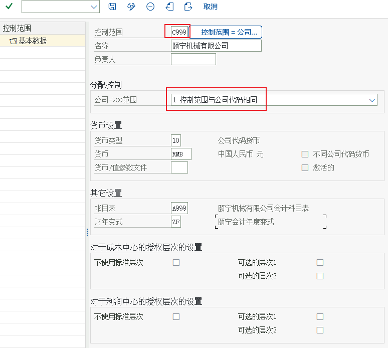
画面 313image317.png · 774×694
{kind=link}
将公司代码分配给成本控制范围
后台OX194 画面 / 4 步-
按上一屏继续操作（画面 314）
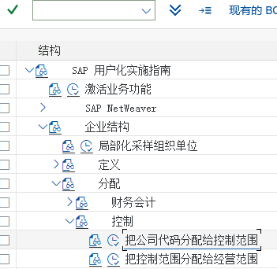
画面 314image318.png · 351×342 -
TCODE代码：OX19

画面 315image319.png · 434×242 -
选中 C999，双击公司代码设置
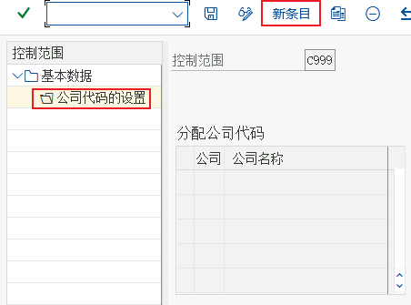
画面 316image320.png · 452×335 -
点击新条目

画面 317image321.png · 454×398 教材笔记将 C999 添加到成本控制范围
{kind=link}
{kind=link}
维护成本控制范围
后台9 画面 / 6 步-
控制－一般控制－组织结构－维护成本控制范围
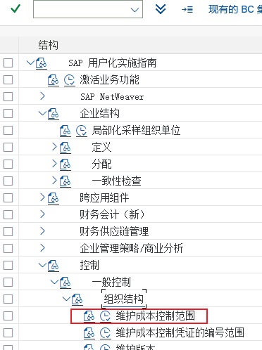
画面 318image322.png · 372×498 -
弹出选择活动，点击维护成本控制范围

画面 319image323.png · 362×201 -
双击 C999，维护基本数据
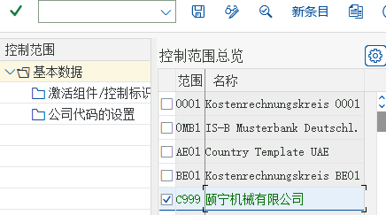
画面 320image324.png · 436×243 -
按上一屏继续操作（画面 321）
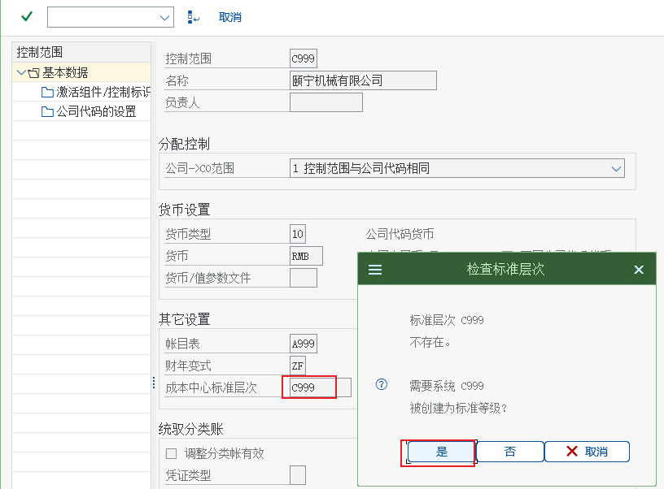
画面 321image325.png · 816×602 教材笔记保存后，点击返回，选中 C999，双击“激活组建/控制标识” -
系统会提示 C999 成本中心标准层次不存在，点击是。

画面 322image326.png · 665×330 -
点击新条目，输入起始财年，比如2021年。
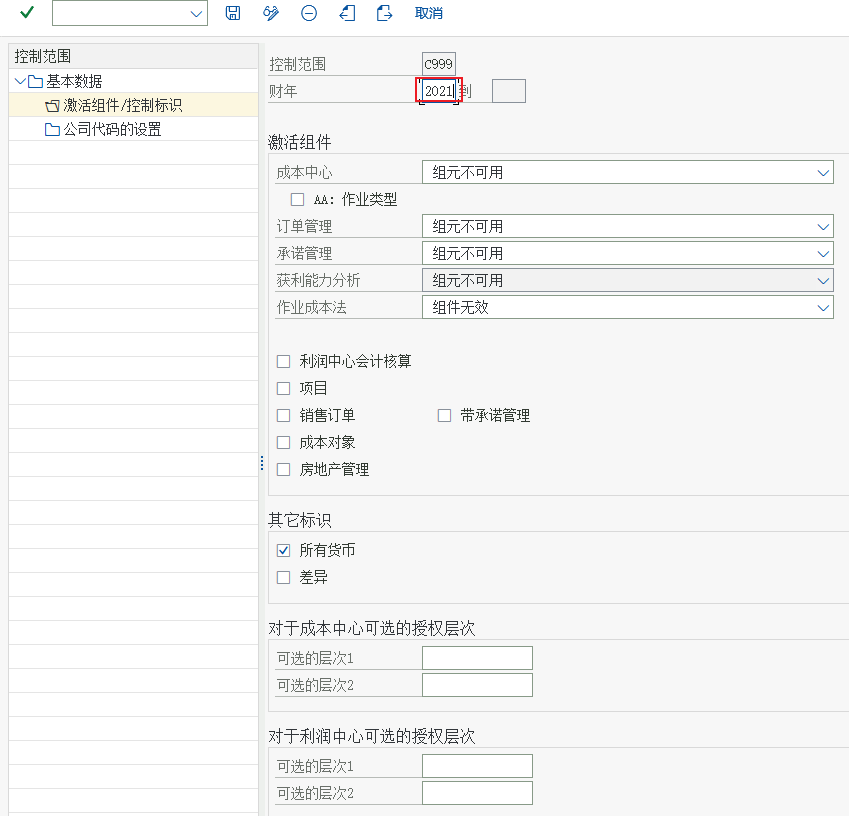
画面 323image329.png · 849×816 
画面 324image330.png · 466×221 画面 323image329.png · 849×816 画面 324image330.png · 466×221 教材笔记会计年度是从…年的概念，将来如果配置没有变化，不需要每年都维护
{kind=link}
{kind=link}
{kind=link}
{kind=link}
维护成本中心组和成本中心
前台OKEON20 画面 / 9 步-
会计核算－控制－成本中心会计－主数据－标准层次－OKEON-更改
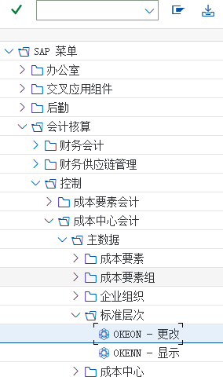
画面 327image331.png · 284×480 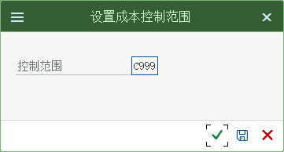
画面 328image332.png · 361×194 -
点击保存就不用每次进来输入成本控制范围了
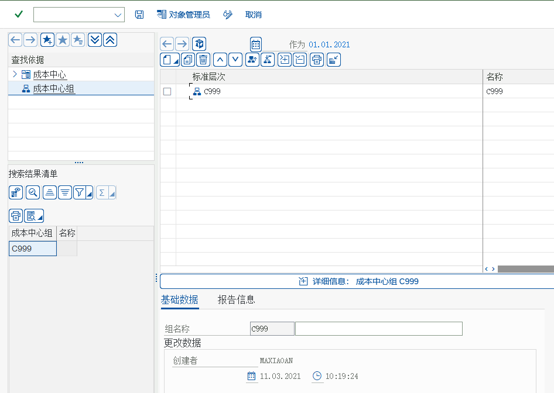
画面 329image335.png · 946×672 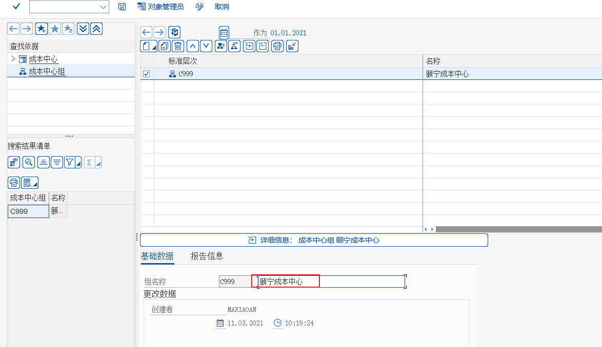
画面 330image336.png · 1174×678 画面 329image335.png · 946×672 画面 330image336.png · 1174×678 -
点击保存，选中C999,然后如下图操作

画面 333image337.png · 827×454 -
选择较低组，进入如下页面

画面 334image338.png · 975×592 -
再创建一个总部
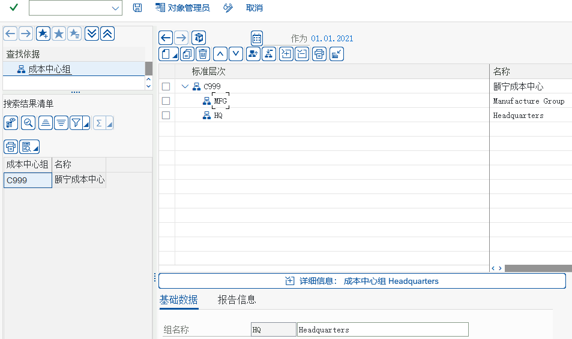
画面 335image339.png · 953×566 -
选择 MFG，选择新建成本中心，输入如下字段，并保存，黄色警告，可以略过。
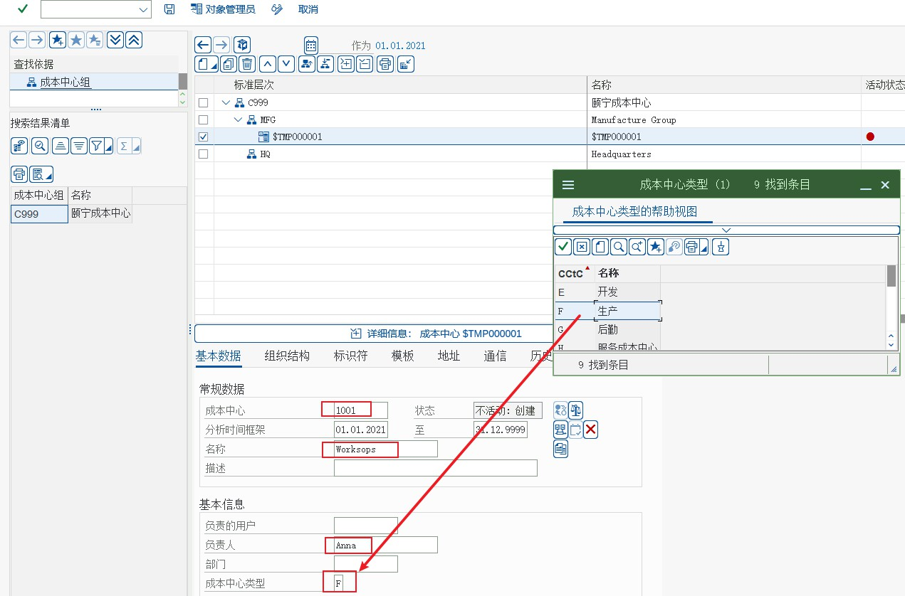
画面 336image342.jpeg · 1271×838 
画面 337image343.png · 910×265 画面 336image342.jpeg · 1271×838 画面 337image343.png · 910×265 教材笔记创建其他的成本中心 -
按上一屏继续操作（画面 340）
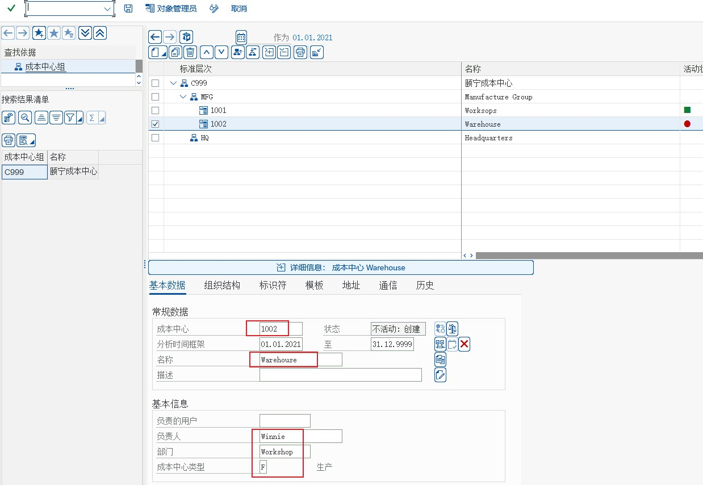
画面 340image344.jpeg · 1238×854 
画面 341image345.png · 938×839 -

画面 342image346.png · 1015×840 
画面 343image347.png · 967×848 
画面 344image348.png · 1155×851 -

画面 345image349.png · 981×858 
画面 346image350.png · 1247×857
{kind=link}
{kind=link}
{kind=link}
{kind=link}
{kind=link}
{kind=link}
{kind=link}
新建初级成本要素
KA0130 画面 / 8 步-
CO 用“成本要素”来管理成本流，成本要素和财务会计里的科目类似
会计－控制－成本中心会计－主数据－成本要素－单个处理－KA01-创建初级成本
画面 347image352.png · 313×521 -
lu41010101

画面 348image355.png · 439×307 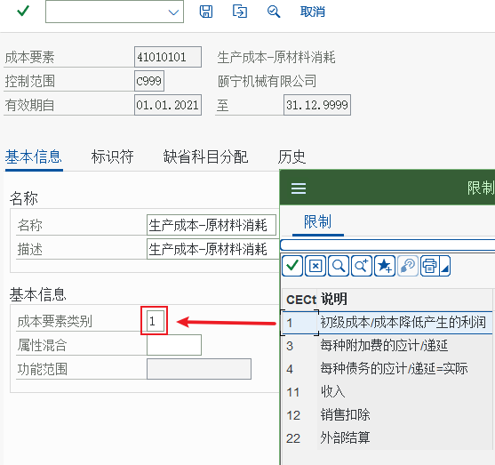
画面 349image356.png · 557×523 画面 348image355.png · 439×307 画面 349image356.png · 557×523 教材笔记重复上述步骤，所有损益类科目都是初级成本要素，除了 41010901 生产成本－生产订单差异的成本要素类别是 “ 22 外部结算”，其他所有初级成本要素的类别都是 “ 1 初级成本/成本降低产生的利润” -
解释“41010901 生产成本－生产订单差异”是生产订单结算产生的，是管理会计计算初结果后，使用一种特殊的成本要素类别“22 外部结算”。

画面 352image357.png · 578×461 -

画面 353image360.png · 605×448 
画面 354image361.png · 588×571 
画面 355image362.png · 587×451 
画面 356image363.png · 581×477 画面 353image360.png · 605×448 画面 354image361.png · 588×571 -

画面 359image364.png · 581×454 
画面 360image365.png · 589×444 
画面 361image366.png · 591×467 
画面 362image367.png · 596×455 -

画面 363image370.png · 592×448 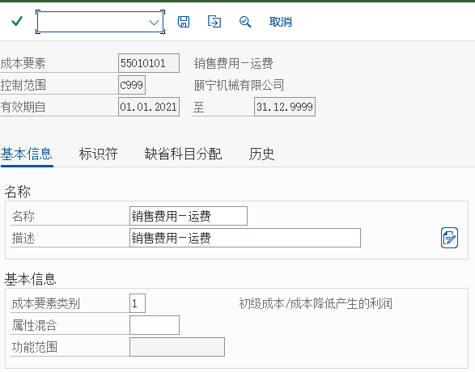
画面 364image371.png · 587×460 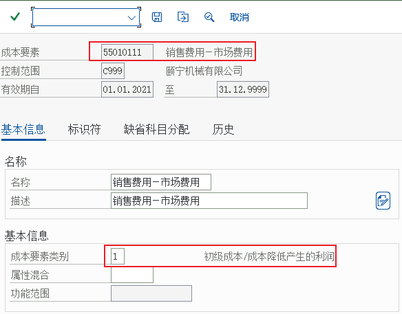
画面 365image372.png · 584×457 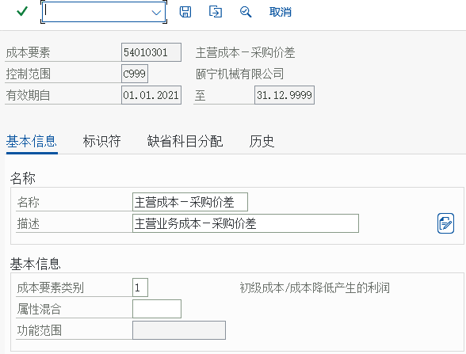
画面 366image373.png · 588×447 画面 363image370.png · 592×448 画面 364image371.png · 587×460 -

画面 369image376.png · 586×471 
画面 370image377.png · 593×463 
画面 371image378.png · 589×453 
画面 372image379.png · 588×463 画面 369image376.png · 586×471 画面 370image377.png · 593×463 -
按上一屏继续操作（画面 375）

画面 375image380.png · 584×450 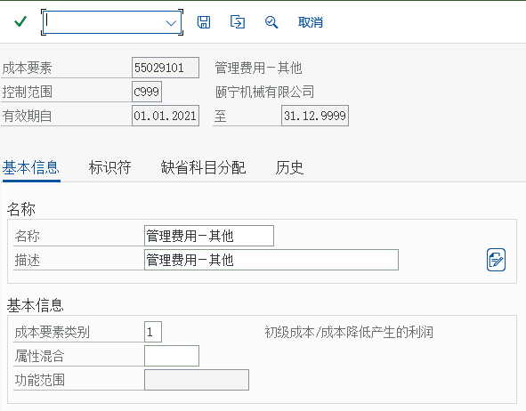
画面 376image381.png · 591×462
{kind=link}
{kind=link}
{kind=link}
{kind=link}
{kind=link}
建立次级成本要素
KA069 画面 / 5 步-
会计－控制－成本中心会计－主数据－成本要素－单个处理－KA06-创建次级成本
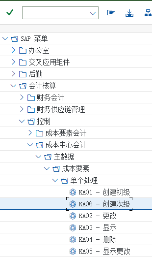
画面 377image382.png · 310×522 -
按上一屏继续操作（画面 378）
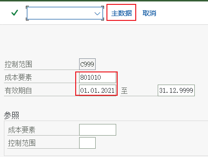
画面 378image383.png · 426×323 -

画面 379image384.png · 592×457 
画面 380image385.png · 593×449 
画面 381image386.png · 591×453 -
43 是和内部作业相关的成本要素

画面 382image387.png · 593×451 -
按上一屏继续操作（画面 383）

画面 383image388.png · 588×444 
画面 384image389.png · 593×459 
画面 385image390.png · 585×456
{kind=link}
{kind=link}
新建成本要素组
6 画面 / 4 步-
我们可以将公司的成本要素按层次结构来管理，这种成本要素组可用根据需要定义任意多个会计－控制－成本要素会计－主数据－成本要素组－KAH1 创建

画面 386image391.png · 234×437 -
按上一屏继续操作（画面 387）

画面 387image392.png · 366×249 
画面 388image393.png · 654×76 -
点击较低层次

画面 389image394.png · 752×151 -
选中 PRI 点击成本要素键

画面 390image395.png · 561×646 
画面 391image396.png · 645×675
更改初级成本要素
0 画面 / 0 步-
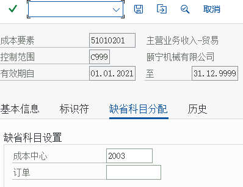
画面 392image398.png · 398×306 
画面 393image399.png · 418×303 
画面 394image400.png · 404×309 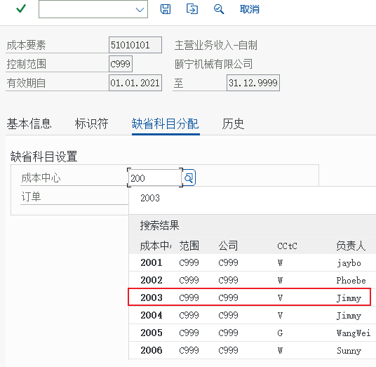
画面 395image401.png · 536×523
{kind=link}
{kind=link}
新建作业类型
KL016 画面 / 2 步-
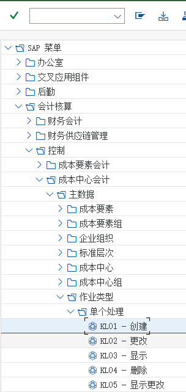
画面 396image405.png · 304×642 
画面 397image406.png · 873×703 
画面 398image407.png · 652×688 画面 396image405.png · 304×642 画面 397image406.png · 873×703 -
会计－控制－成本中心会计－主数据－作业类型－单个处理－KL01-创建

画面 401image408.png · 638×688
{kind=link}
新建作业类型组
3 画面 / 2 步-
按上一屏继续操作（画面 402）

画面 402image409.png · 293×595 
画面 403image410.png · 364×244 -
点击作业类型按钮
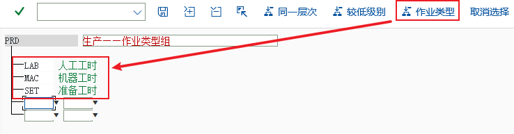
画面 404image411.png · 738×193
{kind=link}
设置作业输出价格
KP267 画面 / 7 步-

画面 405image412.png · 324×465 -
会计核算－控制－成本中心会计－计划－作业输出/价格－KP26－更改

画面 406image413.png · 613×818 -
点击工具栏上的概览屏幕(F5)

画面 407image414.png · 933×257 -

画面 408image415.png · 580×407 -
点击保存，回到如下页面，继续维护机器工时

画面 409image416.png · 959×269 -
保存，返回继续维护 SET
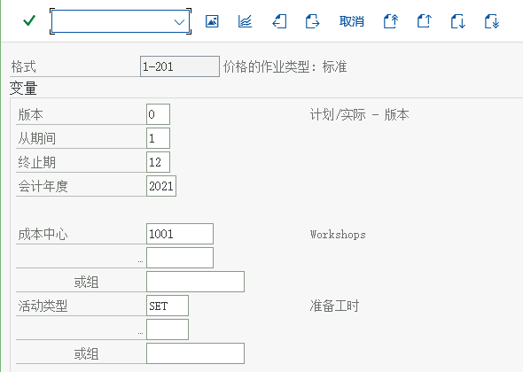
画面 410image417.png · 590×420 -
按上一屏继续操作（画面 411）

画面 411image418.png · 928×257
{kind=link}
维护成本控制凭证的编号范围
后台6 画面 / 5 步-
控制－一般控制－组织结构－维护成本控制凭证的编号范围

画面 412image419.png · 371×417 
画面 413image420.png · 547×176 -
点击复制键

画面 414image421.png · 151×194 -
按上一屏继续操作（画面 415）

画面 415image422.png · 599×562 -
直接复制，程序显示不能复制，点击组菜单，点击维护组

画面 416image423.png · 545×184 -
按上一屏继续操作（画面 417）

画面 417image424.png · 588×224
输入费用供应商发票
FB603 画面 / 2 步| 项目 | 文档中的取值 |
|---|---|
| 供应商 | 30000001 |
| 总帐科目 | 55020141 |
| 凭证货币计的金额 | 90000 |
| 成本中心 | 2001 |
-
解释： 颐宁公司收到佳音地产公司房租发票一张，金额为 90000，这里我们需把这笔费用计入 2001 财务部成本中心

画面 418image425.png · 359×413 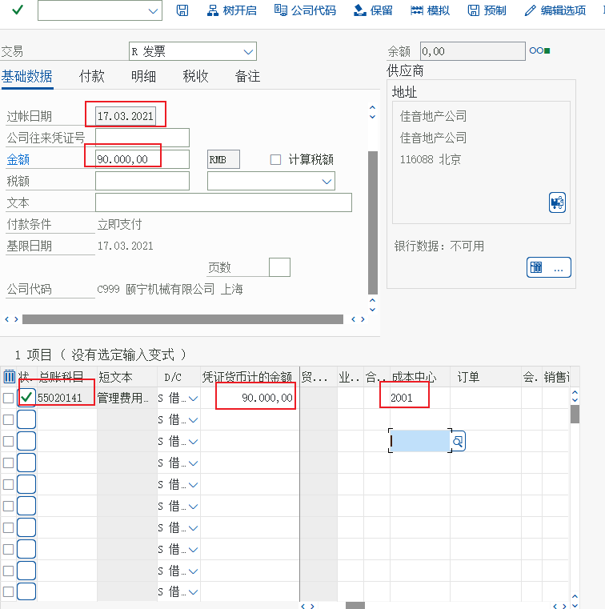
画面 419image426.png · 756×761 -
发票日期 2021年3月17日过帐日期 2021年3月17日金额 90000

画面 420image427.png · 730×308 教材笔记点击保存按钮，将会出现凭证被保存的提示。
{kind=link}
输入普通费用发票
FB504 画面 / 4 步凭证日期 今天记帐日期 今天
总帐科目 41050121 D/C 借方
| 项目 | 文档中的取值 |
|---|---|
| 凭证货币计的金额 | 25500 |
| 成本中心 | 2006 |
| 凭证货币计的金额 | 25500 |
-
解释： 颐宁公司又支付了一笔 25500 元的电费，这笔电费被记录到了 2006 行政部成本中心。这里我们用一般的总账凭证的方式输入这张凭证

画面 421image428.png · 345×313 教材笔记凭证抬头文本 11 月电费 -
总帐科目 10020111 D/C 贷方
原书截图有误，贷方不能录入成本中心
画面 422image429.png · 863×478 -
点击模拟 点击保存

画面 423image430.png · 700×319 -
保存

画面 424image431.png · 323×28
运行成本中心报表
3 画面 / 2 步| 项目 | 文档中的取值 |
|---|---|
| 成本控制范围 | C999 |
| 会计年度 | 2006 |
| 开始期间 | 1 |
| 终止期间 | 12 |
| 计划版本 | 0 |
| 成本中心价值 | 2001 |
| 点击闹钟运行或者按 | F8 |
-
会计－控制－成本中心会计－信息系统－成本中心会计的报表－计划/实际比较－成本中心：实际/计划/差异

画面 425image432.png · 693×738 -
按上一屏继续操作（画面 426）

画面 426image433.png · 616×410 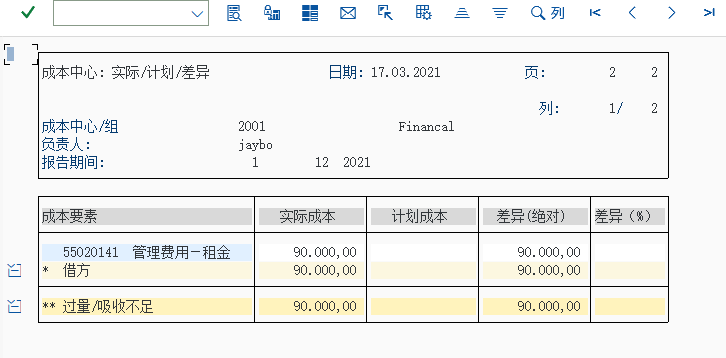
画面 427image434.png · 726×358
{kind=link}
成本中心数据重过帐
KB616 画面 / 5 步-
解释： 90000 元的房租被错误的记录到了 2001 财务部成本中心，我们不必冲销财务凭证。只需要在管理会计中做“重过账”重新将其指定到 2006 行政部成本中心
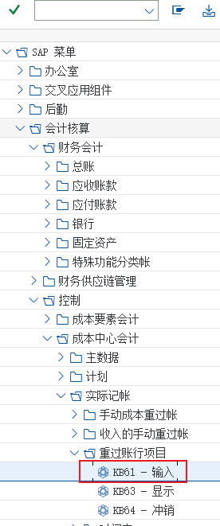
画面 428image435.png · 276×661 
画面 429image436.png · 651×387 -
运行
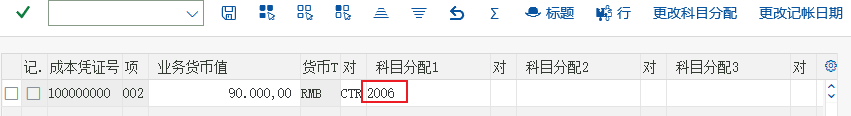
画面 430image437.png · 851×116 -
在这个屏幕里，我们将这笔费用重新指定到 2006 行政部成本中心，然后 点击保存CTRL+S
画面 431image438.png · 215×46 -
重新查询报表
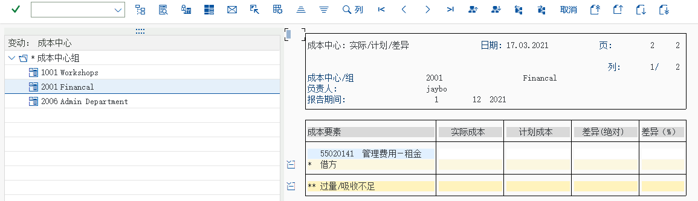
画面 432image439.png · 1155×334 -
按上一屏继续操作（画面 433）

画面 433image440.png · 1142×349 教材笔记可以看到成本中心 2001 下的租金已经转到了 2006
{kind=link}
{kind=link}
{kind=link}
{kind=link}
新建统计指标
KK015 画面 / 2 步-
解释： 颐宁公司决定使用各成本中心占地面积来分配房租费用。在 SAP 管理会计中，类似占地面积等非财务指标,可以用“ 统计指标” 来记录。这里我们建立一个物业租金面积的统计指标。
会计－控制－成本中心会计－主数据－统计指标－单个处理－KK01-创建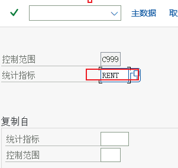
画面 434image443.png · 301×284 
画面 435image444.png · 275×725 画面 434image443.png · 301×284 画面 435image444.png · 275×725 教材笔记录入如下数据，保存 -
按上一屏继续操作（画面 438）

画面 438image445.png · 455×344
{kind=link}
输入统计指标数量
KB31N3 画面 / 3 步-
会计－控制－成本中心会计－实际记账－统计指标－KB31N-输入

画面 439image446.png · 303×817 -
按上一屏继续操作（画面 440）

画面 440image447.png · 913×550 -
保存

画面 441image448.png · 204×31
定义分配循环
6 画面 / 5 步-
解释： 颐宁公司确定的分配房租费用的规则是将记录到 2006 行政部成本中心的所有房租费用按照总部各成本中心的占地面积分配给各成本中心。制造部的工作地点不在这个办公物业中，所以不需要承担房租费用。现在我们把这个分配规则定义在 SAP 管理会计中，SAP 称为“分配循环”

画面 442image449.png · 410×718 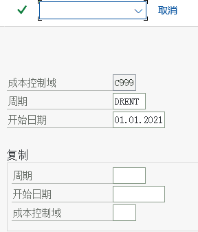
画面 443image450.png · 288×337 -
按上一屏继续操作（画面 444）

画面 444image451.png · 589×281 -
在一个循环里，可以维护很多个分配标准，每个分配标准称为一个“段”，我们点击增加段

画面 445image452.png · 748×464 -
在段表头，我们定义一些概览参数。发送方将成本发送出去，接收方接收成本。点击发送方/接收方

画面 446image453.png · 773×678 原理说明解释：发送方将成本发送出去，接收方接收成本，所以这个分配规则的发送方是 2006 行政部，成本中心的 55020141 管理费用-租金成本要素，接收方是 HQ 总部成本中心组中的各成本中心 -
点击接收方追踪因素
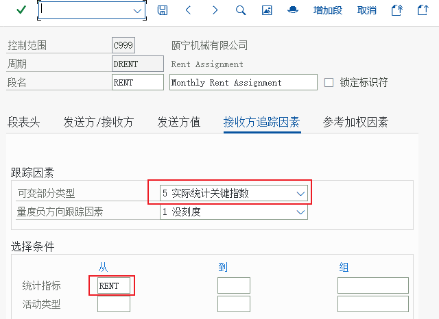
画面 447image454.png · 640×466 原理说明解释：接收方追踪因素是指在多个接收方之间按什么标准分配成本，所以我们的规则是按照教材笔记RENT 物业租金面积统计指标的实际统计值分配成本。
{kind=link}
{kind=link}
分配
3 画面 / 2 步-
解释： 完成了前面的准备工作，接下来要在这个月的月结时，将房租成本分配给了各成本中心
会计－控制－成本中心会计－期末结账－单一功能－分配－KSV5 分配
画面 448image455.png · 386×848 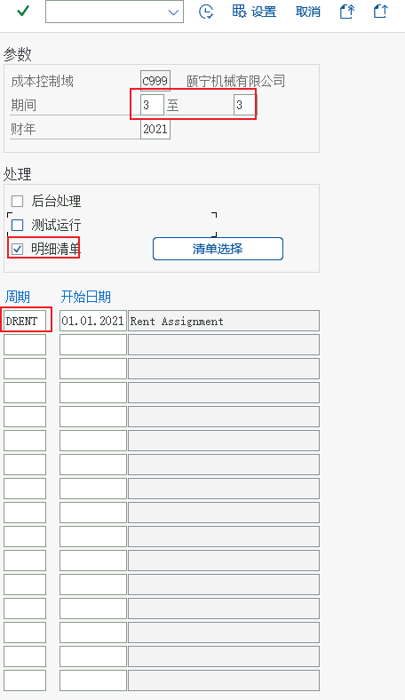
画面 449image456.png · 456×788 教材笔记期间填当月，指执行分配的期间 -
解释： 在这个屏幕中，我们填写执行分配的会计期间，我们可以一次运行几个分配循环，只需要将他们填写在下方的清单里即可。
点击运行
画面 450image457.png · 643×333
{kind=link}
显示成本中心分配到的租金
4 画面 / 3 步-

画面 451image458.png · 517×583 -
会计－控制－成本中心会计－信息系统－成本中心会计的报表－计划/实际比较－成本中心：实际/计划/差异
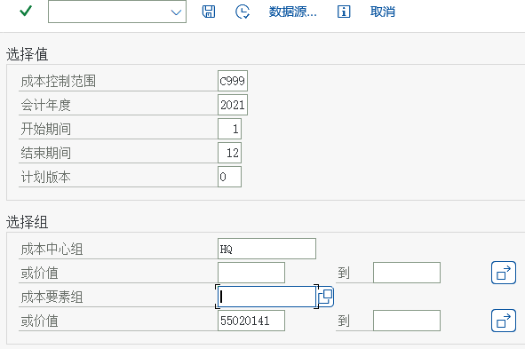
画面 452image459.png · 591×393 
画面 453image460.png · 1264×638 -
点击左边各成本中心，可查看到各成本中心分配到的房租费用
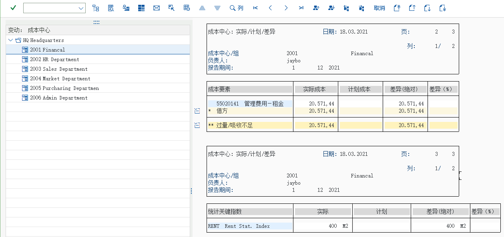
画面 454image461.png · 1259×593
{kind=link}
{kind=link}
定义分摊循环
8 画面 / 5 步-
在本例里我们使用802010 电费作为次级成本要素来分摊41050121 电费初级成本要素为了说明在分摊中成本流的形态发生了怎样的变化。本例不是实际的场景
会计－控制－成本中心会计－期末结账－当前设置－定义评估
画面 455image464.png · 388×572 
画面 456image465.png · 331×362 画面 455image464.png · 388×572 画面 456image465.png · 331×362 -
解释： 和分配类似，我们首先需要把分摊的规则定义在“分摊循环”里，在这个屏幕里，我们给分摊循环起一个编码，并说明他的有效开始时间

画面 459image466.png · 657×308 -
在一个循环里可以维护很多分摊标准，每个分摊标准称为一个段。点击增加段
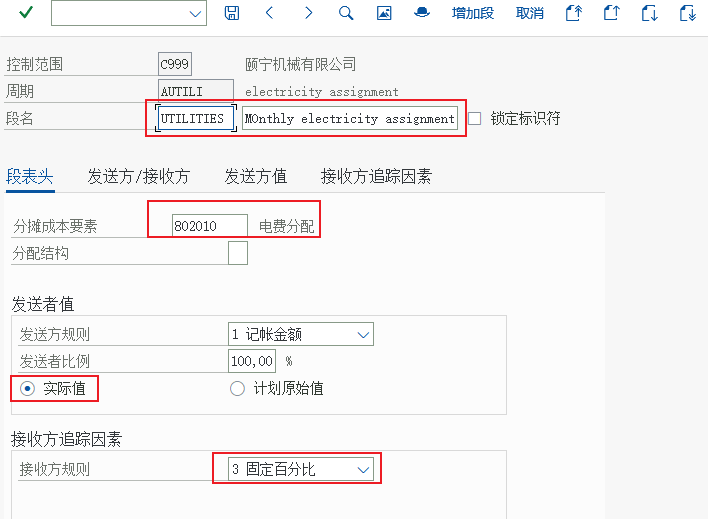
画面 460image467.png · 708×519 -
解释： 和分配不同，分摊中成本流转使用的是次级成本要素，所以在这个屏幕里需要指定相关的次级成本要素。我们既可以像现在这样指定一个固定的分摊成本要素，也可以建立一种从原始的初级成本要素到分摊成本要素的对应关系，SAP 称之为分配结构（屏幕中分摊成本要素的下方）此外，本例中我们使用“固定百分比”的规则在接收方中分摊成本。
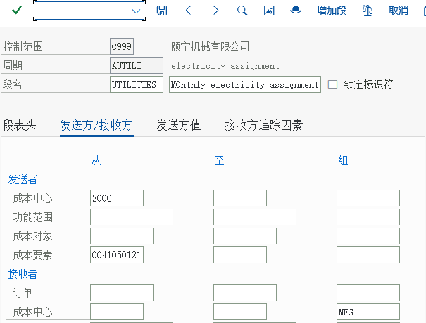
画面 461image468.png · 605×460 -
发送方是 2006 行政部成本中心的 41050121 成本要素，接收方是 MFG 制造部成本中心的各成本中心

画面 462image469.png · 608×368 教材笔记这里表明，1001 及 1002 各占的比例教材笔记填写完毕，点击保存即可
{kind=link}
{kind=link}
分摊
4 画面 / 1 步-
完成了准备工作，我们来执行这个分摊循环

画面 463image472.png · 354×811 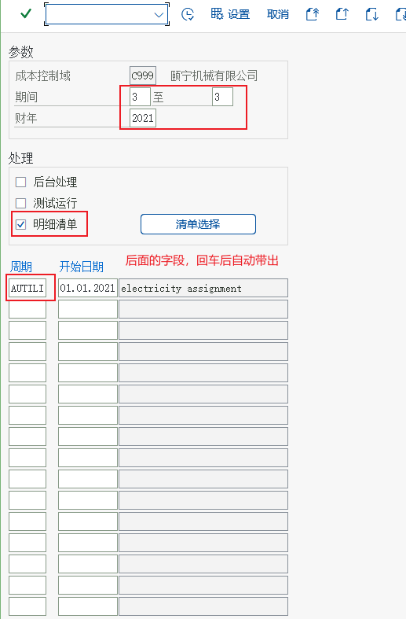
画面 464image473.png · 517×787 画面 463image472.png · 354×811 画面 464image473.png · 517×787
{kind=link}
点击执行
1 画面 / 1 步-
按上一屏继续操作（画面 467）
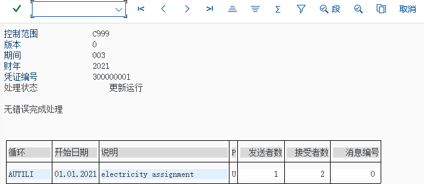
画面 467image474.png · 704×307
{kind=link}
显示成本中心分摊到的电费
4 画面 / 2 步-

画面 468image475.png · 617×386 
画面 469image476.png · 478×589 -
会计－控制－成本中心会计－信息系统－成本中心会计的报表－计划/实际比较－成本中心：实际/计划/差异

画面 470image477.png · 881×327 
画面 471image478.png · 1002×657 原理说明注意：我们显示的 802010 电费分摊是一个次级成本要素，它是公司内部成本流转使用的，是财务会计中没有的科目
创建内部订单类型并维护编号范围
10 画面 / 4 步-
解释： 颐宁公司将要举行 “ 国内用户大会” 为了这次市场推广活动，公司会发生很多费用，我们希望能对这次活动单独核算费用，而不是在成本中心各种费用中。公司中类似的“ 项目”还有很多，在 SAP 管理会计中我们可以用“内部订单”来管理这些项目。项目有各种类型，如市场类的，研发类的，工会活动类的等等。

画面 472image482.png · 512×710 
画面 473image483.png · 405×555 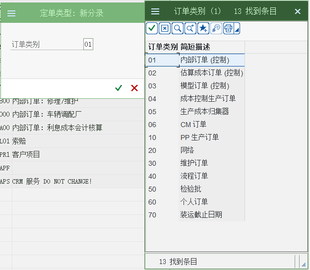
画面 474image484.png · 625×544 画面 472image482.png · 512×710 画面 473image483.png · 405×555 画面 474image484.png · 625×544 -
按上一屏继续操作（画面 478）

画面 478image485.png · 588×722 
画面 479image486.png · 565×730 -
保存后，点击编号范围区间

画面 480image487.png · 820×209 -
将光标选中“未分配的”里的 PMKT 市场活动，点击然后 勾上市场和广告需求。订单前面的方框，再点击

画面 481image488.png · 813×881 教材笔记点击保存
{kind=link}
维护内部订单的结算参数文件
4 画面 / 4 步-
解释： 为了举行“国内用户大会”公司创建了“市场活动”订单类型，其中结算参数文件选择的是系统中已经有的 100，本步骤中，我们来检查结算参数文件 100 的设置

画面 482image490.png · 419×901 -
双击“维护结算参数文件”

画面 483image491.png · 641×680 -
按上一屏继续操作（画面 484）

画面 484image492.png · 476×317 -
双击“结算参数文件100”，
如果没有，则点击新条目，然后回头修改上一步的参结算参数文件，当时我们选择的为20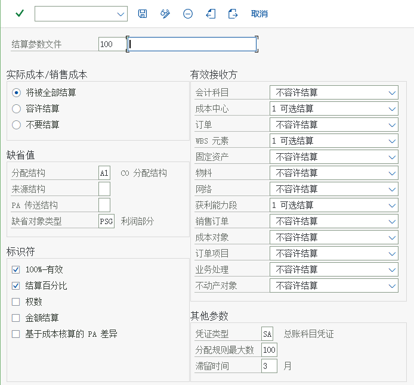
画面 485image493.png · 694×646
{kind=link}
维护内部订单结算的分配结构
6 画面 / 6 步-
后台－控制－内部订单－实际过账－结算－维护分配结构

画面 486image494.png · 354×906 -
按上一屏继续操作（画面 487）

画面 487image495.png · 581×236 -
双击分配
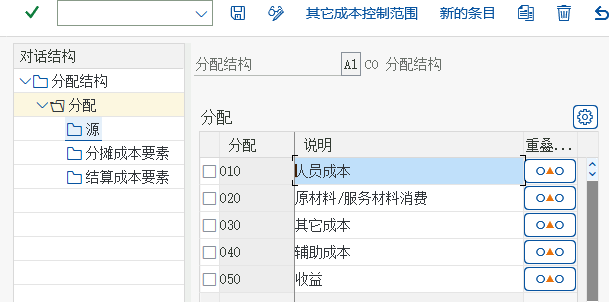
画面 488image496.png · 609×302 -
选中 001 行，然后点击左边的源文件，如果没有001，则点击新的条目，双击左边的“源”

画面 489image497.png · 642×229 教材笔记点击左边的“结算成本要素” -
按上一屏继续操作（画面 490）
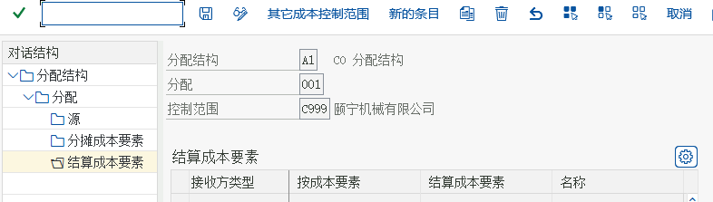
画面 490image498.png · 786×223 -
点击新条目

画面 491image499.png · 763×245
{kind=link}
{kind=link}
维护结算凭证编号范围
3 画面 / 2 步-
后台－控制－内部订单－实际过账－结算－维护结算凭证编号范围
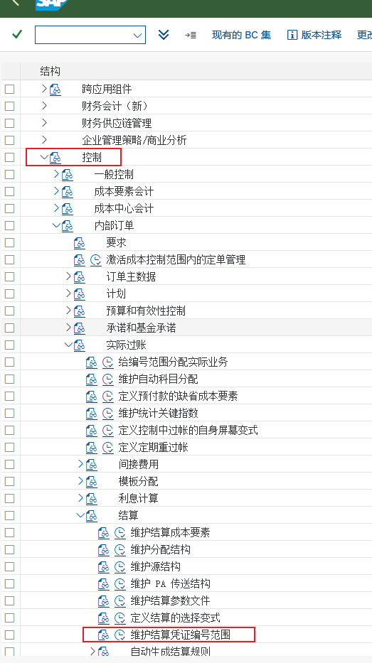
画面 492image500.png · 523×933 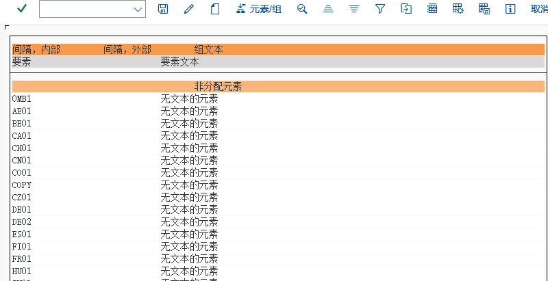
画面 493image501.png · 800×411 -
解释： 对于 颐宁公司国内用户大会发生的费用，我们将通过创建市场活动类型内部订单来举行归集，然后结算到各个成本中心中去，结算完成时会产生相应的结算凭证。本步骤中我们将对结算凭证维护编号范围。
屏幕上方的是已经分配了号码范围的成本控制对象。成本控制对象 C999 还未分配。在未分配栏中选中 C999，点击 ，在标准会计凭证框内打勾，然后点击元素/组按钮 ，未找到用下图的01代替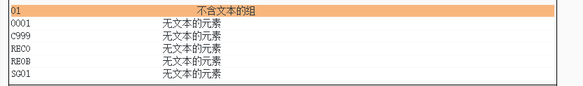
画面 494image502.png · 834×123 教材笔记看到已经分配了点击保存
{kind=link}
{kind=link}
{kind=link}
创建内部订单
KO0410 画面 / 7 步-
会计－控制－内部订单－主数据－KO04-订单管理员

画面 495image503.png · 329×449 -
解释： 我们已经创建了市场活动订单类型，我们将在此类型下创建内部订单来归集国内用户大会发生的费用。

画面 496image504.png · 446×337 -
点击新建

画面 497image505.png · 529×167 -
然后点击保存然后点击保存

画面 498image506.png · 868×716 -
点击结算规则
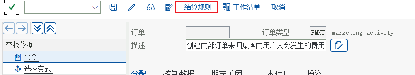
画面 499image507.png · 843×154 
画面 500image508.png · 789×439 -
录入上述信息并回车，得到如下结果：

画面 501image509.png · 738×414 
画面 502image510.png · 968×238 -
点击修改按钮，然后点击屏幕右方的控制数据

画面 503image511.png · 865×338 
画面 504image512.png · 912×532
{kind=link}
输入内部订单费用发票
FB504 画面 / 4 步-
解释： 会计核算－财务会计－总帐－凭证录入－FB50-输入总账科目凭证

画面 505image513.png · 568×310 -
按上一屏继续操作（画面 506）

画面 506image514.png · 892×533 -
点击模拟

画面 507image515.png · 724×339 -
点击保存

画面 508image516.png · 329×27
内部订单的结算
KO883 画面 / 2 步-
解释： 颐宁公司举办了国内用户大会，并为此创建了内部订单来归集发生的费用。本步骤中我们将把订单中归集的费用结算到各个成本中心中去。
控制－内部订单－单一功能－结算－KO88-单个处理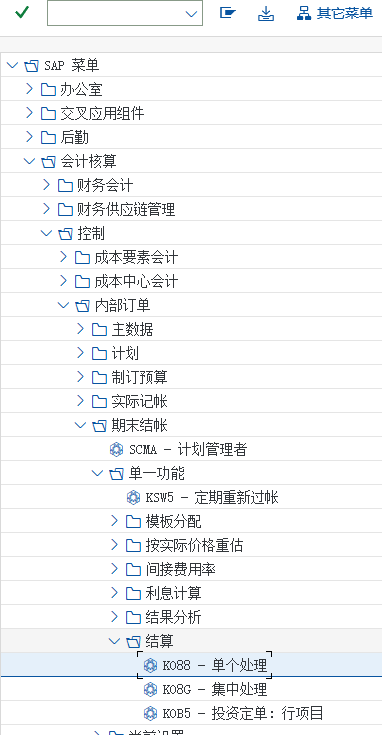
画面 509image517.png · 382×735 -
按上一屏继续操作（画面 510）
画面 510image518.png · 610×430 画面 511image519.png · 835×804 踩坑提醒无错误，运行已经完成
{kind=link}
{kind=link}
{kind=link}
显示内部订单的结算结果
4 画面 / 3 步-
会计－控制－成本中心会计－信息系统－成本中心会计的报表－计划/实际比较－成本中心：实际/计划/差异

画面 512image520.png · 497×589 -

画面 513image521.png · 1152×785 画面 514image522.png · 595×389 -
点击各成本中心查看报表

画面 515image523.png · 1063×597
{kind=link}
4. 关于截图与取值
S4.docx 中作者在真实系统里截取的中文界面画面（原始文件名 imageNNN.png 保留在每张图的图注里，可与 Word 原文逐张对照）。本站没有对这些画面做任何重绘或模拟。C999、公司名「颐宁机械有限公司」、工厂 F999、物料 R999-100/T999-100/F999-100、客户 K001/K002 等）都来自原作者的教材环境。照着手顺做时，操作顺序与配置点可以照搬，具体编号/名称请换成你自己系统里的值；遇到与文档不同的提示消息，先看「排错与踩坑」页里原文档记录的同类问题。